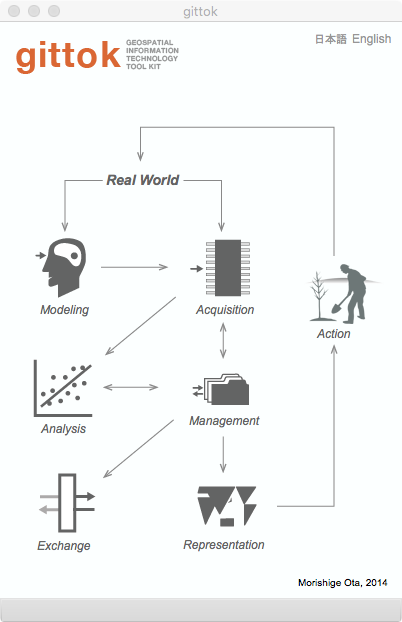
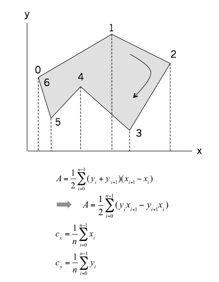
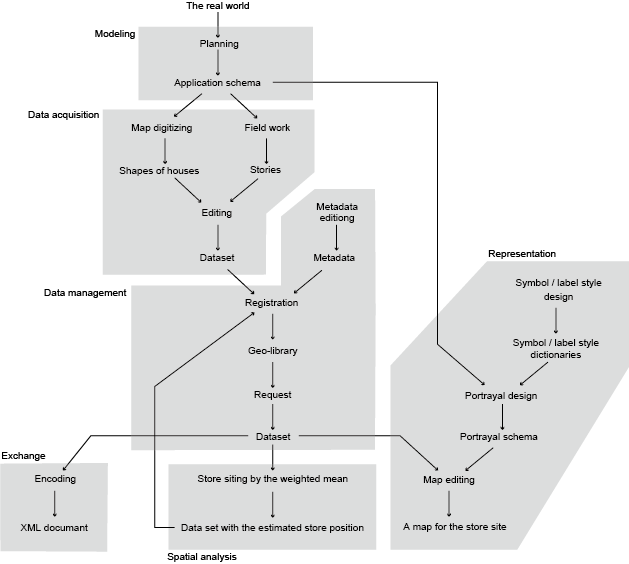

Introduction
Gittok (Geospatial Information Technology Tool Kit, pronouce: jee-tock) is a software tool for the introductory course on Geospatial Information Technology. It is useful for undergraduate students and beginners of GIT in industory. Gittok is developed by Morishige Ota [Kokusai Kogyo Co., Ltd.], a member of GIT Working Group (Leader: Koichi Kubota [Chuo University]) set under the research project "Geospatial Information Sciences Education and Spatial Thinking (Leader: Yasushi Asami [The University of Tokyo], 2009-2013).
We expect that you will understand fundamental knowledge on GIT by study the instruction now you are reading, and slides provided for the lectures. And you may use gittok to solve your problems relating GIT in the class room. Furthermore, maybe, you will have a mind to develop your own Geographic Information System after studying GIT with gittok.
However, maybe, you wish to know what is Geospatial Information Technology (GIT) before studying this field. It is a set of information technologies regarding geospatial information. Geospatial information is a set of objects on the earth. There are various natural and artificial phenomena occur and cease on the earth in every moments. For example, earthquake and typhoon are phenomena happen frequently in Japan, and they sometimes give serious effects to our life. Social problems such as population increasing and decreasing, environment change also effect our quality of life. Most of these problems relates to 5W1H (where, when, why, who, what, and how). GIT is an information technology especially emphasizing where and when. Meanwhile, Information Technology is a technology that conceptualize, acquire, manage, analyze, exchange, and represent information. Consequently, GIT is a technology that conceptualize, acquire, manage, exchange and represent information relating to the earth.
Gittok is a study support software, not a general purpose Geographic Information System. Gittok cannot apply big amount of data and does not equip wide variety of analysis methods. Instead, we provided not only software but slides and texts to help your GIT learning.
In this page you will read what is GIT and its simple history at first, then GIT Body of Knowledge the second, and finally, an example how we put Geospatial Information Technology in practice.
GIT and its simple history
The research on Geographic Information System (GIS) started 1960s in Canada and USA and also in Japan a little later. The first Japanese project acqurring national digital geographic information was started in 1974. In early stage, life line (telephone, gas, water, under-water) management systems are developed and city planning, road management to assist centeral and local governments at the next. Today, GISis widely used for life line management, city planning, environmental planning, disaster prevention, security, health care, trade area analysis, store siting, car navigation, shortest pass finding for foot passengers, games and more.
GIT is a basic technology for the development of GIS. It may say GIT assists our society through the use of GIS.However today, the border between GIT and IT is obscure and geospatial technology is widely used in the information services in our daily life.
GIT Body of Knowledge
You can study six kowledge area including in theGIT Body of Knowldedge (GIT BoK). They are modeling, data acquisition, data management, spatial analysis, data exchange and representation.

Fig. 1. Gittok title page
Modeling is an abstraction or conceptualization of phenomena in the world. Abstraction is a selection and a simplification of characteristics of phenomena. Abstraction of the real world phenomena is called a feature. The result of the modeling is represented as an application schema. Schema is formalized description of the model. Application schema is a conceptual schema for data required by one or more applications. In case of gittok, we use the rule of Unified Modelong Language (UML) for the formal description of schemata, because it is used to describe the rules of Geographic Information Standards such as those provided by ISO/TC 211. ISO is an internationa organization for standardization and it organizes the technical committee 211 for standardization of Geographic Information since 1994.
Data acquisition is to create geospatial data in accordance with the application schema. The dataset is a collection of feature instances. It is called Kit in gittok. Gittok provides a software module called "Editor" and it is used to digitize geospatial data with multimedia attributes such as image, video, sound and URL of relating web site.
Data management is a process of dealing with or controling data. In case of geospatial data, the mechanism called clearinghouse or geo-library is widly used as the Spatial Data Infrastructure (SDI). The goal of this type of data management is to provide access to geospatial data and related online services for data access, visualization, or order through the Internet. For this purpose, metadata (data about data) is used as an index of the data. In case of gittok, you can use stand-alone geolibrary. It means that you can make your own geospatial data library and can access data using metada.
Spatial analysis is an analysis using location and geometry of features as important variables. Analysis is a proess to find a substance of phenomena. There are a lot of methodologies proposed for applications. So, it is impossible to learn every analysis methods in short period. Gittok provide several simple analysis tools for exercises. However if you want to add your own program, you can do it. Because gittok is an opensource free software. You can find the source code on github.
Data exchange is a data communication between different systems. To make commnication, you should use the same language. In case of gittok, you can translate geospatial data into the XML document.
Representation is the conversion from data to information which meaning or value is undersood by the user. Usually we use the form of map to represent the information. Gittok provided the software module called "Cartograhper" to design and edit maps.
An example how to put GIT in practise
We are working for the store siting in the convenience store chain company. we must propose the location of the new store near the residential area to our boss. How do we select the appropriate place? The process is as follows.
1. Modeling
2. Data acquisition
3. Data management
4. Spatial Analysis
5. Representation
6. Exchange
1. Modeling
The place of the store should fullfil conditions described under.
1. The place should be lacated at equal distance from houses. If not equal, people living far from the store feel inconvenience.
2. The houses with bigger buying power should be nearer than others to increase earnings.
These conditions seems to be conflicting. However the first condition is important for consumers and the second is important for the store. How we decide the place?
At first, let the coordinate of the store is (x, y), the position of each regidence (i) is (xi, yi). Then the distance between the store and the house di is,
di = sqrt((x - xi)^2 + (y - yi)^2)
here, sqrt: square root, ^2: square
You can get a position of the store to be average distance from each regidences. But such a position does not fullfil the second condition. To fullfil the second condition, we can give weight that indicate the buying power to each house. The weight is used as the coefficient of the distance. It means,
di = wi * sqrt((x - xi)^2 + (y - yi)^2)
You can get (x, y) where the summation (sum) of di is minimum (min).
sum (di | i = 1...n) → min
In other words,
sum(di^2 | i = 1...n) → min
The derivative of x and derivetive of y are both zero at the minimum position.
sum (wi^2 * 2 * (x - xi)) = 0
sum (wi^2 * 2 * (y - yi)) = 0
To chenge these equations,
x = sum (wi^2 * xi) / sum (wi^2)
y = sum (wi^2 * yi) / sum (wi^2)
These equations are called weighted means. Generaly, equations and argorithms to represent phenomena and things are called mathematical models. We describe the mathematical model in order to solve the problem in the real world.
Now, how do we get the weight? It is very difficult to investigate the buying power directly, because it is a matter of privacy. However, if you have a large scale map around the target area, you can digitize the shape of houses, and you can calculate an area of a shape. And may be you can observe the stories of housces from the street.This is called a field work. If you can get information of the area of buildings and stories, you can get the gross floor area (GFA) of houses. And we may say that the buying power is proportional to GFA. It means GFA can be used as a weight.
As a consequence, we can get the position of the store by applying the equation of the weighted mean and we can use GFA as a weight.
2. Data acquisition
We need to digitize the shapes of houses drawn on a large scale mapthat covers the envisaged trade area. Usually we can digitize shapes on the map displayed on a personal computer screen. A shape of a house is a polygon. And you can get an area and a centroid of the polygon by the method shown under.

Fig. 2. The method to get an area (A) and a centroid (cx, cy) of a polygon
You may think (cx, cy) is a representative position of a house.
By the way, The data we construct can be used not only for the store siting, but also the customer management after thestore will be located. Thus we need to keep and manage the data systematically.
3. Data management
The data diitized now has coordinates releted to the position on the earth. Such a data is called geospatial data. If you manage geospatial data systematically, you should make a metadata. It is a data about data. It works as an index of the data in the geo-library. A geo-library consists of a collection of geospatial data and a folder in which metadatas are stored.You will be able to request the geo-library to get data you need using metadata.
4. Spatial analysis
Spatial analysis in this case is to get the position of the store. After we made a geospatial data, we can apply an operation to get the appropriate store position. The result will be merged in the dataset.
5. Representation
In most case, we draw a map to show the result of the spatial analysis. For example, you cannot understand where the store should be, if you get only the coordinate. But you can understand if the position is drawn on the map. Such a map made for the paticular purpose is called a thematic map.To draw a map you need to think of the design to make it easier to understand. The design rules are described as the portrayal schema. It consists of symbol styles, label styles and data to explain the correpondence between symbol or label and feature attribute. You can design and print a map to show the store siting plan using gittok.
6. Exchange
Geospatial data are transfered in order to reply the request. The data format should be understandable to the recierver. Usually we use the commonly accepted format such as XML. Gittok can encode almost all data such as application schema, Kit, metadata, and protrayal schema as human readable XML document. The rules of data structure are explained related slides and texts. We can send data if there is a reqiest from different section in the company.

Fig. 3. The work flow diagram for the store siting
Good luck!
Operation of this page
Buttons
Each icon works as a button. You can open the relating page by clicking an icon.
日本語
You can read a Japanese text.
English
You can read this page.